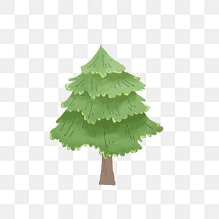
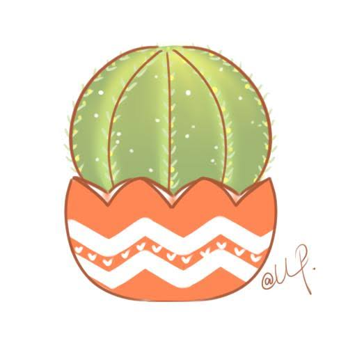
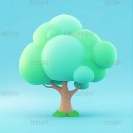

Eco-Mario
瑪利歐風冒險 — 選擇你的可愛角色，清理垃圾、越過廢氣煙囪！
選擇角色與開始守護大地
使用方向鍵或 A/D 鍵自由左右移動。
按 1 次空白鍵 可跳過煙囪；連按 2 次（二段跳） 可直接跳過煙囪上方噴出的 CO₂ 毒氣！
- 方向鍵 ◄ ►：左右自由移動
- ⬆ / 空白鍵：跳躍（按一下過煙囪，連按兩下過煙霧）
- 綠色 ♻ 加生命垃圾：紙箱、寶特瓶、鋁罐，碰到後增加 1 顆生命並得 40 分（最多 5 顆）。
- 紅色 ⚠ 扣生命垃圾：碎掉的雞蛋、破掉的手機、黑色垃圾、魚骨頭，碰到後扣 1 顆生命，請避開！
- 🧴 保溫瓶：吃到後生命值直接補滿 5 顆
- 🌈 累積 1000 分：天空變成晴朗藍色並出現彩虹
- 🏭 彩色煙囪與 💨 CO₂：注意避開廢氣，碰觸會死亡！